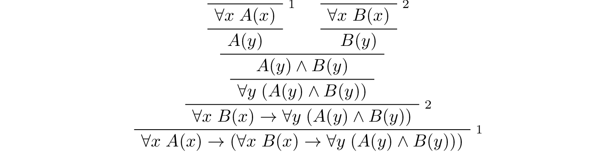
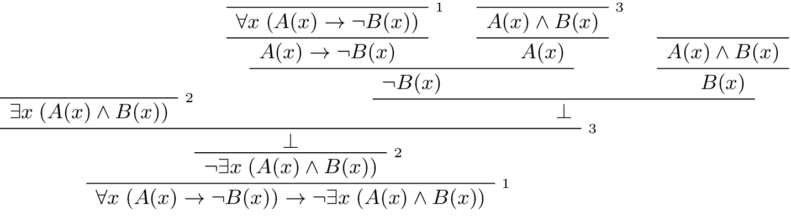

9. First Order Logic in Lean¶
9.1. Functions, Predicates, and Relations¶
In the last chapter, we discussed the language of first-order logic. We will see in the course of this book that Lean’s built-in logic is much more expressive; but it includes first-order logic, which is to say, anything that can be expressed (and proved) in first-order logic can be expressed (and proved) in Lean.
Lean is based on a foundational framework called type theory, in which every variable is assumed to range elements of some type. You can think of a type as being a “universe,” or a “domain of discourse,” in the sense of first-order logic.
For example, suppose we want to work with a first-order language with one constant symbol, one unary function symbol, one binary function symbol, one unary relation symbol, and one binary relation symbol. We can declare a new type U (for “universe”) and the relevant symbols as follows:
constant U : Type
constant c : U
constant f : U → U
constant g : U → U → U
constant P : U → Prop
constant R : U → U → Prop
We can then use them as follows:
variables x y : U
#check c
#check f c
#check g x y
#check g x (f c)
#check P (g x (f c))
#check R x y
The #check command tells us that the first four expressions have type U, and that the last two have type Prop. Roughly, this means that the first four expressions correspond to terms of first-order logic, and that the last two correspond to formulas.
Note all the following:
A unary function is represented as an object of type
U → Uand a binary function is represented as an object of typeU → U → U, using the same notation as for implication between propositions.We write, for example,
f xto denote the result of applyingftox, andg x yto denote the result of applyinggtoxandy, again just as we did when using modus ponens for first-order logic. Parentheses are needed in the expressiong x (f c)to ensure thatf cis parsed as a single argument.A unary predicate is presented as an object of type
U → Propand a binary predicate is represented as an object of typeU → U → Prop. You can think of a binary relationRas being a function that assumes two arguments in the universe,U, and returns a proposition.We write
P xto denote the assertion thatPholds ofx, andR x yto denote thatRholds ofxandy.
You may reasonably wonder what difference there is between a constant and a variable in Lean. The following declarations also work:
variable U : Type
variable c : U
variable f : U → U
variable g : U → U → U
variable P : U → Prop
variable R : U → U → Prop
variables x y : U
#check c
#check f c
#check g x y
#check g x (f c)
#check P (g x (f c))
#check R x y
Although the examples function in much the same way, the constant and variable commands do very different things. The constant command declares a new object, axiomatically, and adds it to the list of objects Lean knows about. In contrast, when it is first executed, the variable command does not create anything. Rather, it tells Lean that whenever we enter an expression using the corresponding identifier, it should create a temporary variable of the corresponding type.
Many types are already declared in Lean’s standard library. For example, there is a type written nat or ℕ, that denotes the natural numbers:
#check nat
#check ℕ
You can enter the unicode ℕ with \nat or \N. The two expressions mean the same thing.
Using this built-in type, we can model the language of arithmetic, as described in the last chapter, as follows:
namespace hidden
constant mul : ℕ → ℕ → ℕ
constant add : ℕ → ℕ → ℕ
constant square : ℕ → ℕ
constant even : ℕ → Prop
constant odd : ℕ → Prop
constant prime : ℕ → Prop
constant divides : ℕ → ℕ → Prop
constant lt : ℕ → ℕ → Prop
constant zero : ℕ
constant one : ℕ
end hidden
We have used the namespace command to avoid conflicts with identifiers that are already declared in the Lean library. (Outside the namespace, the constant mul we just declared is named hidden.mul.) We can again use the #check command to try them out:
namespace hidden
constant mul : ℕ → ℕ → ℕ
constant add : ℕ → ℕ → ℕ
constant square : ℕ → ℕ
constant even : ℕ → Prop
constant odd : ℕ → Prop
constant prime : ℕ → Prop
constant divides : ℕ → ℕ → Prop
constant lt : ℕ → ℕ → Prop
constant zero : ℕ
constant one : ℕ
variables w x y z : ℕ
#check mul x y
#check add x y
#check square x
#check even x
end hidden
We can even declare infix notation of binary operations and relations:
local infix + := add
local infix * := mul
local infix < := lt
(Getting notation for numerals 1, 2, 3, … is trickier.) With all this in place, the examples above can be rendered as follows:
#check even (x + y + z) ∧ prime ((x + one) * y * y)
#check ¬ (square (x + y * z) = w) ∨ x + y < z
#check x < y ∧ even x ∧ even y → x + one < y
In fact, all of the functions, predicates, and relations discussed here, except for the “square” function, are defined in the Lean library. They become available to us when we put the commands import data.nat.prime and open nat at the top of a file in Lean.
import data.nat.prime
open nat
constant square : ℕ → ℕ
variables w x y z : ℕ
#check even (x + y + z) ∧ prime ((x + 1) * y * y)
#check ¬ (square (x + y * z) = w) ∨ x + y < z
#check x < y ∧ even x ∧ even y → x + 1 < y
Here, we declare the constants square and prime axiomatically, but refer to the other operations and predicates in the Lean library. In this book, we will often proceed in this way, telling you explicitly what facts from the library you should use for exercises.
Again, note the following aspects of syntax:
In contrast to ordinary mathematical notation, in Lean, functions are applied without parentheses or commas. For example, we write
square xandadd x yinstead of \(\mathit{square}(x)\) and \(\mathit{add}(x, y)\).The same holds for predicates and relations: we write
even xandlt x yinstead of \(\mathit{even}(x)\) and \(\mathit{lt}(x, y)\), as one might do in symbolic logic.The notation
add : ℕ → ℕ → ℕindicates that addition assumes two arguments, both natural numbers, and returns a natural number.Similarly, the notation
divides : ℕ → ℕ → Propindicates thatdividesis a binary relation, which assumes two natural numbers as arguments and forms a proposition. In other words,divides x yexpresses the assertion thatxdividesy.
Lean can help us distinguish between terms and formulas. If we #check the expression x + y + 1 in Lean, we are told it has type ℕ, which is to say, it denotes a natural number. If we #check the expression even (x + y + 1), we are told that it has type Prop, which is to say, it expresses a proposition.
In Chapter 7 we considered many-sorted logic, where one can have multiple universes. For example, we might want to use first-order logic for geometry, with quantifiers ranging over points and lines. In Lean, we can model this as by introducing a new type for each sort:
variables Point Line : Type
variable lies_on : Point → Line → Prop
We can then express that two distinct points determine a line as follows:
#check ∀ (p q : Point) (L M : Line),
p ≠ q → lies_on p L → lies_on q L → lies_on p M →
lies_on q M → L = M
Notice that we have followed the convention of using iterated implication rather than conjunction in the antecedent. In fact, Lean is smart enough to infer what sorts of objects p, q, L, and M are from the fact that they are used with the relation lies_on, so we could have written, more simply, this:
#check ∀ p q L M, p ≠ q → lies_on p L → lies_on q L →
lies_on p M → lies_on q M → L = M
9.2. Using the Universal Quantifier¶
In Lean, you can enter the universal quantifier by writing \all. The motivating examples from Section 7.1 are rendered as follows:
import data.nat.prime
open nat
#check ∀ x, (even x ∨ odd x) ∧ ¬ (even x ∧ odd x)
#check ∀ x, even x ↔ 2 ∣ x
#check ∀ x, even x → even (x^2)
#check ∀ x, even x ↔ odd (x + 1)
#check ∀ x, prime x ∧ x > 2 → odd x
#check ∀ x y z, x ∣ y → y ∣ z → x ∣ z
Remember that Lean expects a comma after the universal quantifier, and gives it the widest scope possible. For example, ∀ x, P ∨ Q is interpreted as ∀ x, (P ∨ Q), and we would write (∀ x, P) ∨ Q to limit the scope. If you prefer, you can use the plain ascii expression forall instead of the unicode ∀.
In Lean, then, the pattern for proving a universal statement is rendered as follows:
variable U : Type
variable P : U → Prop
example : ∀ x, P x :=
assume x,
show P x, from sorry
Read assume x as “fix an arbitrary value x of U.” Since we are allowed to rename bound variables at will, we can equivalently write either of the following:
variable U : Type
variable P : U → Prop
example : ∀ y, P y :=
assume x,
show P x, from sorry
example : ∀ x, P x :=
assume y,
show P y, from sorry
This constitutes the introduction rule for the universal quantifier. It is very similar to the introduction rule for implication: instead of using assume to temporarily introduce an assumption, we use assume to temporarily introduce a new object, y. (In fact, assume and assume are both alternate syntax for a single internal construct in Lean, which can also be denoted by λ.)
The elimination rule is, similarly, implemented as follows:
variable U : Type
variable P : U → Prop
variable h : ∀ x, P x
variable a : U
example : P a :=
show P a, from h a
Observe the notation: P a is obtained by “applying” the hypothesis h to a. Once again, note the similarity to the elimination rule for implication.
Here is an example of how it is used:
variable U : Type
variables A B : U → Prop
example (h1 : ∀ x, A x → B x) (h2 : ∀ x, A x) : ∀ x, B x :=
assume y,
have h3 : A y, from h2 y,
have h4 : A y → B y, from h1 y,
show B y, from h4 h3
Here is an even shorter version of the same proof, where we avoid using have:
example (h1 : ∀ x, A x → B x) (h2 : ∀ x, A x) : ∀ x, B x :=
assume y,
show B y, from h1 y (h2 y)
You should talk through the steps, here. Applying h1 to y yields a proof of A y → B y, which we then apply to h2 y, which is a proof of A y. The result is the proof of B y that we are after.
In the last chapter, we considered the following proof in natural deduction:
Here is the same proof rendered in Lean:
variable U : Type
variables A B : U → Prop
example : (∀ x, A x) → (∀ x, B x) → (∀ x, A x ∧ B x) :=
assume hA : ∀ x, A x,
assume hB : ∀ x, B x,
assume y,
have Ay : A y, from hA y,
have By : B y, from hB y,
show A y ∧ B y, from and.intro Ay By
Here is an alternative version, using the “anonymous” versions of have:
variable U : Type
variables A B : U → Prop
example : (∀ x, A x) → (∀ x, B x) → (∀ x, A x ∧ B x) :=
assume hA : ∀ x, A x,
assume hB : ∀ x, B x,
assume y,
have A y, from hA y,
have B y, from hB y,
show A y ∧ B y, from and.intro ‹A y› ‹B y›
The exercises below ask you to prove the barber paradox, which was discussed in the last chapter. You can do that using only propositional reasoning and the rules for the universal quantifier that we have just discussed.
9.3. Using the Existential Quantifier¶
In Lean, you can type the existential quantifier, ∃, by writing \ex. If you prefer you can use the ascii equivalent, exists. The introduction rule is exists.intro and requires two arguments: a term, and a proof that term satisfies the required property.
variable U : Type
variable P : U → Prop
example (y : U) (h : P y) : ∃ x, P x :=
exists.intro y h
The elimination rule for the existential quantifier is given by exists.elim. It follows the form of the natural deduction rule: if we know ∃x, P x and we are trying to prove Q, it suffices to introduce a new variable, y, and prove Q under the assumption that P y holds.
variable U : Type
variable P : U → Prop
variable Q : Prop
example (h1 : ∃ x, P x) (h2 : ∀ x, P x → Q) : Q :=
exists.elim h1
(assume (y : U) (h : P y),
have h3 : P y → Q, from h2 y,
show Q, from h3 h)
As usual, we can leave off the information as to the data type of y and the hypothesis h after the assume, since Lean can figure them out from the context. Deleting the show and replacing h3 by its proof, h2 y, yields a short (though virtually unreadable) proof of the conclusion.
example (h1 : ∃ x, P x) (h2 : ∀ x, P x → Q) : Q :=
exists.elim h1 (assume y h, h2 y h)
The following example uses both the introduction and the elimination rules for the existential quantifier.
variable U : Type
variables A B : U → Prop
example : (∃ x, A x ∧ B x) → ∃ x, A x :=
assume h1 : ∃ x, A x ∧ B x,
exists.elim h1
(assume y (h2 : A y ∧ B y),
have h3 : A y, from and.left h2,
show ∃ x, A x, from exists.intro y h3)
Notice the parentheses in the hypothesis; if we left them out, everything after the first ∃ x would be included in the scope of that quantifier. From the hypothesis, we obtain a y that satisfies A y ∧ B y, and hence A y in particular. So y is enough to witness the conclusion.
It is sometimes annoying to enclose the proof after an exists.elim in parenthesis, as we did here with the assume ... show block. To avoid that, we can use a bit of syntax from the programming world, and use a dollar sign instead. In Lean, an expression f $ t means the same thing as f (t), with the advantage that we do not have to remember to close the parenthesis. With this gadget, we can write the proof above as follows:
variable U : Type
variables A B : U → Prop
example : (∃ x, A x ∧ B x) → ∃ x, A x :=
assume h1 : ∃ x, A x ∧ B x,
exists.elim h1 $
assume y (h2 : A y ∧ B y),
have h3 : A y, from and.left h2,
show ∃ x, A x, from exists.intro y h3
The following example is more involved:
example : (∃ x, A x ∨ B x) → (∃ x, A x) ∨ (∃ x, B x) :=
assume h1 : ∃ x, A x ∨ B x,
exists.elim h1 $
assume y (h2 : A y ∨ B y),
or.elim h2
(assume h3 : A y,
have h4 : ∃ x, A x, from exists.intro y h3,
show (∃ x, A x) ∨ (∃ x, B x), from or.inl h4)
(assume h3 : B y,
have h4 : ∃ x, B x, from exists.intro y h3,
show (∃ x, A x) ∨ (∃ x, B x), from or.inr h4)
Note again the placement of parentheses in the statement.
In the last chapter, we considered the following natural deduction proof:
Here is a proof of the same implication in Lean:
variable U : Type
variables A B : U → Prop
example : (∀ x, A x → ¬ B x) → ¬ ∃ x, A x ∧ B x :=
assume h1 : ∀ x, A x → ¬ B x,
assume h2 : ∃ x, A x ∧ B x,
exists.elim h2 $
assume x (h3 : A x ∧ B x),
have h4 : A x, from and.left h3,
have h5 : B x, from and.right h3,
have h6 : ¬ B x, from h1 x h4,
show false, from h6 h5
Here, we use exists.elim to introduce a value x satisfying A x ∧ B x. The name is arbitrary; we could just as well have used z:
example : (∀ x, A x → ¬ B x) → ¬ ∃ x, A x ∧ B x :=
assume h1 : ∀ x, A x → ¬ B x,
assume h2 : ∃ x, A x ∧ B x,
exists.elim h2 $
assume z (h3 : A z ∧ B z),
have h4 : A z, from and.left h3,
have h5 : B z, from and.right h3,
have h6 : ¬ B z, from h1 z h4,
show false, from h6 h5
Here is another example of the exists-elimination rule:
variable U : Type
variable u : U
variable P : Prop
example : (∃x : U, P) ↔ P :=
iff.intro
(assume h1 : ∃x, P,
exists.elim h1 $
assume x (h2 : P),
h2)
(assume h1 : P,
exists.intro u h1)
This is subtle: the proof does not go through if we do not declare a variable u of type U, even though u does not appear in the statement of the theorem. This highlights a difference between first-order logic and the logic implemented in Lean. In natural deduction, we can prove \(\forall x \; P(x) \to \exists x \; P(x)\), which shows that our proof system implicitly assumes that the universe has at least one object. In contrast, the statement (∀ x : U, P x) → ∃ x : U, P x is not provable in Lean. In other words, in Lean, it is possible for a type to be empty, and so the proof above requires an explicit assumption that there is an element u in U.
9.4. Equality and calculational proofs¶
In Lean, reflexivity, symmetry, and transitivity are called eq.refl, eq.symm, and eq.trans, and the second substitution rule is called eq.subst. Their uses are illustrated below.
variable A : Type
variables x y z : A
variable P : A → Prop
example : x = x :=
show x = x, from eq.refl x
example : y = x :=
have h : x = y, from sorry,
show y = x, from eq.symm h
example : x = z :=
have h1 : x = y, from sorry,
have h2 : y = z, from sorry,
show x = z, from eq.trans h1 h2
example : P y :=
have h1 : x = y, from sorry,
have h2 : P x, from sorry,
show P y, from eq.subst h1 h2
The rule eq.refl above assumes x as an argument, because there is no hypothesis to infer it from. All the other rules assume their premises as arguments. Here is an example of equational reasoning:
variables (A : Type) (x y z : A)
example : y = x → y = z → x = z :=
assume h1 : y = x,
assume h2 : y = z,
have h3 : x = y, from eq.symm h1,
show x = z, from eq.trans h3 h2
This proof can be written more concisely:
example : y = x → y = z → x = z :=
assume h1 h2, eq.trans (eq.symm h1) h2
Because calculations are so important in mathematics, however, Lean provides more efficient ways of carrying them out. One method is to use the rewrite tactic. Typing begin and end anywhere a proof is expected puts Lean into tactic mode, which provides an alternative way of writing a proof: rather than writing it directly, you provide Lean with a list of instructions that show Lean how to construct a proof of the statement in question. The statement to be proved is called the goal, and many instructions make progress by transforming the goal into something that is easier to prove. The rewrite command, which carries out a substitution on the goal, is a good example. The previous example can be proved as follows:
example : y = x → y = z → x = z :=
assume h1 : y = x,
assume h2 : y = z,
show x = z,
begin
rewrite ←h1,
apply h2
end
If you put the cursor after the word begin, Lean will tell you that the goal at that point is to prove x = z. The first command changes the goal x = z to y = z; the left-facing arrow before h1 (which you can enter as \<-) tells Lean to use the equation in the reverse direction. If you put the cursor after the comma, Lean shows you the new goal, y = z. The apply command uses h2 to complete the proof.
An alternative is to rewrite the goal using h1 and h2, which reduces the goal to x = x. When that happens, rewrite automatically applies reflexivity. Rewriting is such a common operation in Lean that we can use the shorthand rw in place of the full rewrite.
example : y = x → y = z → x = z :=
assume h1 : y = x,
assume h2 : y = z,
show x = z,
begin
rw ←h1,
rw h2
end
In fact, a sequence of rewrites can be combined, using square brackets:
example : y = x → y = z → x = z :=
assume h1 : y = x,
assume h2 : y = z,
show x = z,
begin
rw [←h1, h2]
end
And when you reduce a proof to a single tactic, you can use by instead of begin ... end.
example : y = x → y = z → x = z :=
assume h1 : y = x,
assume h2 : y = z,
show x = z, by rw [←h1, h2]
If you put the cursor after the ←h1, Lean shows you the goal at that point.
We will see in the coming chapters that in ordinary mathematical proofs, one commonly carries out calculations in a format like this:
Lean has a mechanism to model such calculational proofs. Whenever a proof of an equation is expected, you can provide a proof using the identifier calc, following by a chain of equalities and justification, in the following form:
calc
e1 = e2 : justification 1
... = e3 : justification 2
... = e4 : justification 3
... = e5 : justification 4
The chain can go on as long as needed, and in this example the result is a proof of e1 = e5. Each justification is the name of the assumption or theorem that is used. For example, the previous proof could be written as follows:
example : y = x → y = z → x = z :=
assume h1 : y = x,
assume h2 : y = z,
calc
x = y : eq.symm h1
... = z : h2
As usual, the syntax is finicky; notice that there are no commas in the calc expression, and the colons and dots need to be entered exactly in that form. All that varies are the expressions e1, e2, e3, ... and the justifications themselves.
The calc environment is most powerful when used in conjunction with rewrite, since we can then rewrite expressions with facts from the library. For example, Lean’s library has a number of basic identities for the integers, such as these:
import data.int.basic
variables x y z : int
example : x + 0 = x :=
add_zero x
example : 0 + x = x :=
zero_add x
example : (x + y) + z = x + (y + z) :=
add_assoc x y z
example : x + y = y + x :=
add_comm x y
example : (x * y) * z = x * (y * z) :=
mul_assoc x y z
example : x * y = y * x :=
mul_comm x y
example : x * (y + z) = x * y + x * z :=
left_distrib x y z
example : (x + y) * z = x * z + y * z :=
right_distrib x y z
You can also write the type of integers as ℤ, entered with either \Z or \int We have imported the file data.int.basic to make all the basic properties of the integers available to us. (In later snippets, we will suppress this line in the online and pdf versions of the textbook, to avoid clutter.) Notice that, for example, add_comm is the theorem ∀ x y, x + y = y + x. So to instantiate it to s + t = t + s, you write add_comm s t. Using these axioms, here is the calculation above rendered in Lean, as a theorem about the integers:
example (x y z : int) : (x + y) + z = (x + z) + y :=
calc
(x + y) + z = x + (y + z) : add_assoc x y z
... = x + (z + y) : eq.subst (add_comm y z) rfl
... = (x + z) + y : eq.symm (add_assoc x z y)
Using rewrite is more efficient, though at times we have to provide information to specify where the rules are used:
example (x y z : int) : (x + y) + z = (x + z) + y :=
calc
(x + y) + z = x + (y + z) : by rw add_assoc
... = x + (z + y) : by rw [add_comm y z]
... = (x + z) + y : by rw add_assoc
In that case, we can use a single rewrite:
example (x y z : int) : (x + y) + z = (x + z) + y :=
by rw [add_assoc, add_comm y z, add_assoc]
If you #check the proof before the sequence of rewrites is sufficient, the error message will display the remaining goal.
Here is another example:
variables a b d c : int
example : (a + b) * (c + d) = a * c + b * c + a * d + b * d :=
calc
(a + b) * (c + d) = (a + b) * c + (a + b) * d : by rw left_distrib
... = (a * c + b * c) + (a + b) * d : by rw right_distrib
... = (a * c + b * c) + (a * d + b * d) : by rw right_distrib
... = a * c + b * c + a * d + b * d : by rw ←add_assoc
Once again, we can get by with a shorter proof:
example : (a + b) * (c + d) = a * c + b * c + a * d + b * d :=
by rw [left_distrib, right_distrib, right_distrib, ←add_assoc]
9.5. Exercises¶
Fill in the
sorry.section variable A : Type variable f : A → A variable P : A → Prop variable h : ∀ x, P x → P (f x) -- Show the following: example : ∀ y, P y → P (f (f y)) := sorry end
Fill in the
sorry.section variable U : Type variables A B : U → Prop example : (∀ x, A x ∧ B x) → ∀ x, A x := sorry end
Fill in the
sorry.section variable U : Type variables A B C : U → Prop variable h1 : ∀ x, A x ∨ B x variable h2 : ∀ x, A x → C x variable h3 : ∀ x, B x → C x example : ∀ x, C x := sorry end
Fill in the
sorry’s below, to prove the barber paradox.open classical -- not needed, but you can use it -- This is an exercise from Chapter 4. Use it as an axiom here. axiom not_iff_not_self (P : Prop) : ¬ (P ↔ ¬ P) example (Q : Prop) : ¬ (Q ↔ ¬ Q) := not_iff_not_self Q section variable Person : Type variable shaves : Person → Person → Prop variable barber : Person variable h : ∀ x, shaves barber x ↔ ¬ shaves x x -- Show the following: example : false := sorry end
Fill in the
sorry.section variable U : Type variables A B : U → Prop example : (∃ x, A x) → ∃ x, A x ∨ B x := sorry end
Fill in the
sorry.section variable U : Type variables A B : U → Prop variable h1 : ∀ x, A x → B x variable h2 : ∃ x, A x example : ∃ x, B x := sorry end
Fill in the
sorry.variable U : Type variables A B C : U → Prop example (h1 : ∃ x, A x ∧ B x) (h2 : ∀ x, B x → C x) : ∃ x, A x ∧ C x := sorry
Complete these proofs.
variable U : Type variables A B C : U → Prop example : (¬ ∃ x, A x) → ∀ x, ¬ A x := sorry example : (∀ x, ¬ A x) → ¬ ∃ x, A x := sorry
Fill in the
sorry.variable U : Type variables R : U → U → Prop example : (∃ x, ∀ y, R x y) → ∀ y, ∃ x, R x y := sorry
The following exercise shows that in the presence of reflexivity, the rules for symmetry and transitivity are equivalent to a single rule.
theorem foo {A : Type} {a b c : A} : a = b → c = b → a = c := sorry -- notice that you can now use foo as a rule. The curly braces mean that -- you do not have to give A, a, b, or c section variable A : Type variables a b c : A example (h1 : a = b) (h2 : c = b) : a = c := foo h1 h2 end section variable {A : Type} variables {a b c : A} -- replace the sorry with a proof, using foo and rfl, without using eq.symm. theorem my_symm (h : b = a) : a = b := sorry -- now use foo and my_symm to prove transitivity theorem my_trans (h1 : a = b) (h2 : b = c) : a = c := sorry end
Replace each
sorrybelow by the correct axiom from the list.import data.int.basic -- these are the axioms for a commutative ring #check @add_assoc #check @add_comm #check @add_zero #check @zero_add #check @mul_assoc #check @mul_comm #check @mul_one #check @one_mul #check @left_distrib #check @right_distrib #check @add_left_neg #check @add_right_neg #check @sub_eq_add_neg variables x y z : int theorem t1 : x - x = 0 := calc x - x = x + -x : by rw sub_eq_add_neg ... = 0 : by rw add_right_neg theorem t2 (h : x + y = x + z) : y = z := calc y = 0 + y : by rw zero_add ... = (-x + x) + y : by rw add_left_neg ... = -x + (x + y) : by rw add_assoc ... = -x + (x + z) : by rw h ... = (-x + x) + z : by rw add_assoc ... = 0 + z : by rw add_left_neg ... = z : by rw zero_add theorem t3 (h : x + y = z + y) : x = z := calc x = x + 0 : sorry ... = x + (y + -y) : sorry ... = (x + y) + -y : sorry ... = (z + y) + -y : by rw h ... = z + (y + -y) : sorry ... = z + 0 : sorry ... = z : sorry theorem t4 (h : x + y = 0) : x = -y := calc x = x + 0 : by rw add_zero ... = x + (y + -y) : by rw add_right_neg ... = (x + y) + -y : by rw add_assoc ... = 0 + -y : by rw h ... = -y : by rw zero_add theorem t5 : x * 0 = 0 := have h1 : x * 0 + x * 0 = x * 0 + 0, from calc x * 0 + x * 0 = x * (0 + 0) : sorry ... = x * 0 : sorry ... = x * 0 + 0 : sorry, show x * 0 = 0, from t2 _ _ _ h1 theorem t6 : x * (-y) = -(x * y) := have h1 : x * (-y) + x * y = 0, from calc x * (-y) + x * y = x * (-y + y) : sorry ... = x * 0 : sorry ... = 0 : by rw t5 x, show x * (-y) = -(x * y), from t4 _ _ h1 theorem t7 : x + x = 2 * x := calc x + x = 1 * x + 1 * x : by rw one_mul ... = (1 + 1) * x : sorry ... = 2 * x : rfl